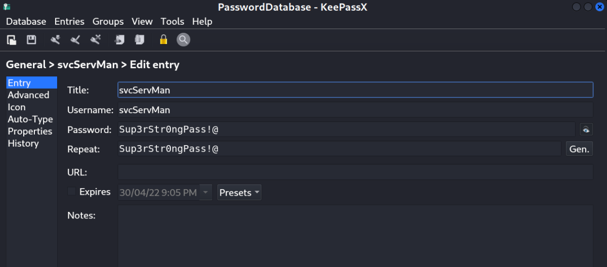
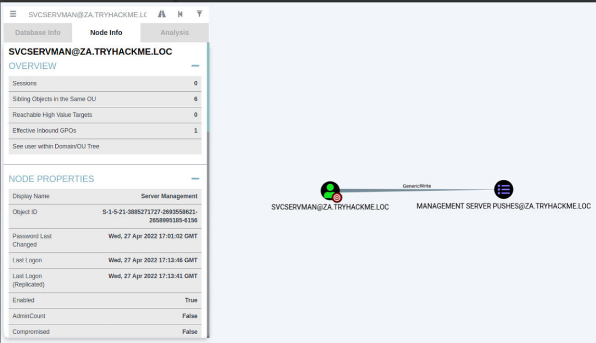
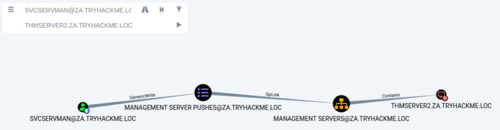
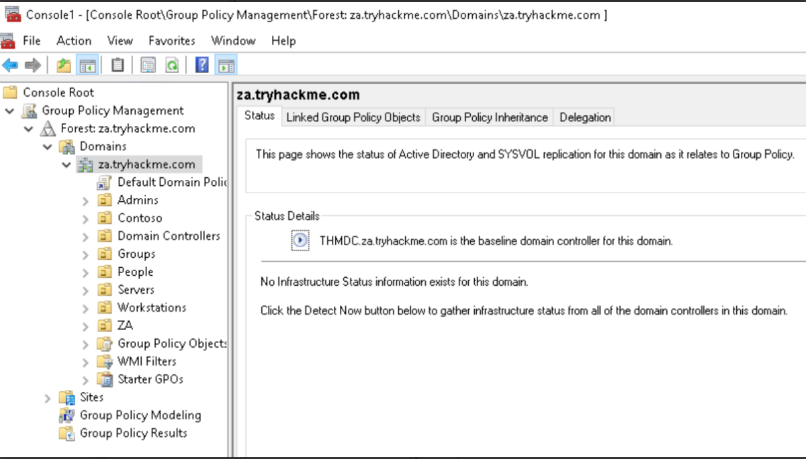
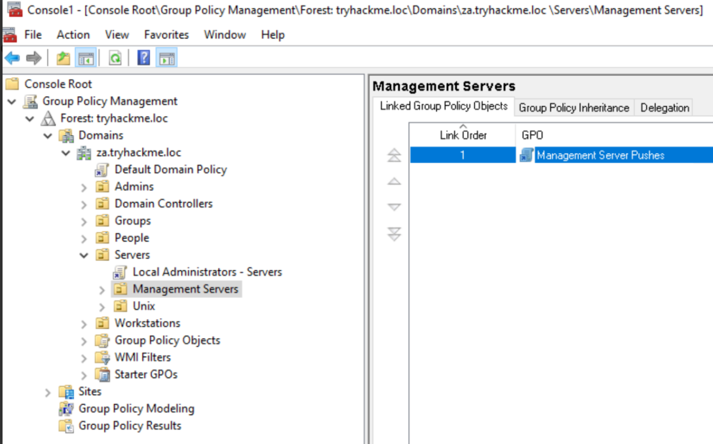
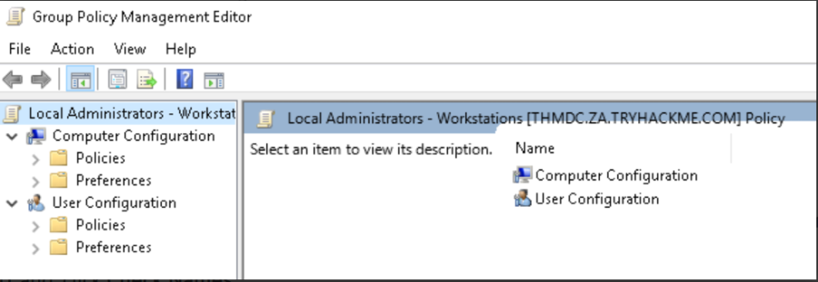
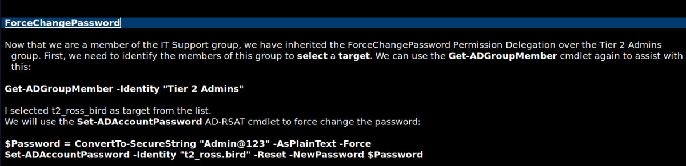
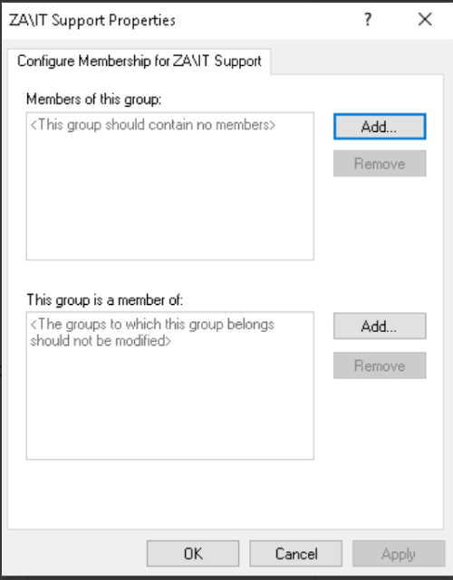
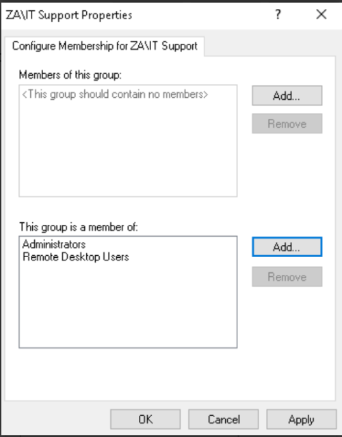

Exploiting GPOs
Keylogging the user allowed us to decrypt their credential database, providing us with credentials that can be useful to further our goal of AD exploitation, namely the svcServMan account. We need to perform a bit of enumeration to figure out what these credentials will be useful for. Luckily for us, we already have Sharphound data that we can use. Using the search feature in Bloodhound, let's review the permissions that the discovered account has:

BloodHound:

One permission, in particular, stands out for this account, ownership over a Group Policy Object (GPO). Furthermore, when we do a bit of investigation, it seems like this GPO is applied to our THMSERVER2 machine:

This may provide us with the ideal opportunity to further our AD exploitation!
Group Policy Objects
Remember when we discussed the SYSVOL directory in Enumerating AD? This is the directory where AD GPOs are stored to be replicated to domain-joined machines. A GPO is a virtual collection of policy settings. Each GPO has a unique name, called a GUID. That's why if you try to read the contents of the SYSVOL directory, it won't make a lot of sense with all the random names.
Each Windows computer has a Local Policy Configuration. This contains several notable configurations such as:
▪ Application configuration for services such as the Firewall, Anti-Virus, and Applocker.
▪ Local Group membership such as the Administrator or Remote Desktop Users groups.
▪ Startup configuration such as scripts that should be executed.
▪ Security and protocol settings such as SMBv1 support.
These are just a few examples. There are a significant amount of configuration options that can be set.
Group Policy Management
If you only have one Windows computer, it is easy to change the local policy configuration directly on the host. However, you need a mechanism to deploy a configuration from a central location in large organisations. This is where Group Policy Management (GPM) comes into play. Instead of defining policies locally on each machine, GPM allows us to define policies directly on the AD structure. Essentially, we can define GPOs for AD objects, such as a specific OU or group.
Domain-joined computers would then pull all policies from SYSVOL periodically and apply the relevant ones. By default, policies are replicated every 15 minutes through the gpupdate application. We can, however, also manually execute this application from Command Prompt to apply policies instantly.
Exploiting GPOs
Although there are several ways in which GPOs can be exploited, we will stick with the simple solution of adding an AD account we control to both the local Administrators and local Remote Desktop Users groups. This will allow us administrative privileges on THMSERVER2 and the ability to RDP in. We could also use the exposed SSH port, but not many organisations have upgraded to providing SSH access. Hence, RDP access or conventional lateral movement techniques like SMBExec are safer.
In order to modify the GPO, we need to access Group Policy Management as the AD user that has the relevant permissions. We could RDP into THMSERVER1 as the user, but that may kick the user out of their active session, raising suspicion. Instead, we will RDP into THMWRK1 with either our normal or our Tier 2 Admin account, inject the AD user's credentials into memory using the runas command, and open MMC to modify the GPO. For a recap on the runas command, refer to the Enumerating AD room; however, the required command is also provided here that should be executed from an administrative command prompt window:
Note: Administrative Command Prompt was not required. (I tested it)
Thus, we can RDP into THMWRK1 machine with any account.
Then do the following.
runas /netonly /user:za.tryhackme.loc\svcServMan cmd.exe
Then, Enter the Password as recovered from the Password Database. [Sup3rStr0ngPass!@]
Once we get a new CMD, run mmc
We now want to add the Group Policy Management snap-in:
Click File -> Add/Remove Snap-in
Select the Group Policy Management snap-in and click Add
Click Ok
You should now be able to see GPOs for the za.tryhackme.com domain:

We can now navigate to the GPO that our user has permission to modify (Servers > Management Servers> Management Server Pushes).

We can right-click on the GPO and select Edit. This will open the new Group Policy Management Editor window.

In order to add our account to the local groups, we need to perform the following steps:
1. Expand Computer Configuration
2. Expand Policies
3. Expand Windows Settings
4. Expand Security Settings
5. Right Click on Restricted Groups and select Add Group (If the IT Support group already exists, it means someone has already performed the exploit. You can either delete it to create it yourself, or just inspect it to see what was configured.)
6. Click Browse, enter IT Support and click Check Names
7. Click Okay twice
Note: In My Case, I added the Group Tier 2 Admins in Restricted Groups. (So that i can use the following user from Password Delegation Task)


We will do the same in "Tier 2 Admins"
The first filter is not used. For the second filter, we want to add both the Administrators and Remote Desktop Users groups. In the end, it should look something like this:

Once the configuration has been made, we can click Apply and OK. Now, all we need to do is wait for a maximum of 15 minutes for the GPO to be applied.
Note: We can also use gpupdate /force as the user svcServMan to make it faster from GPO update.
Now, we can use any “Tier 2 Admin” to RDP into the THMSERVER2 Machine.
I Used the Following Credentials To Finish the Room Questions:
Username: t2_ross.bird
Password: Admin@123